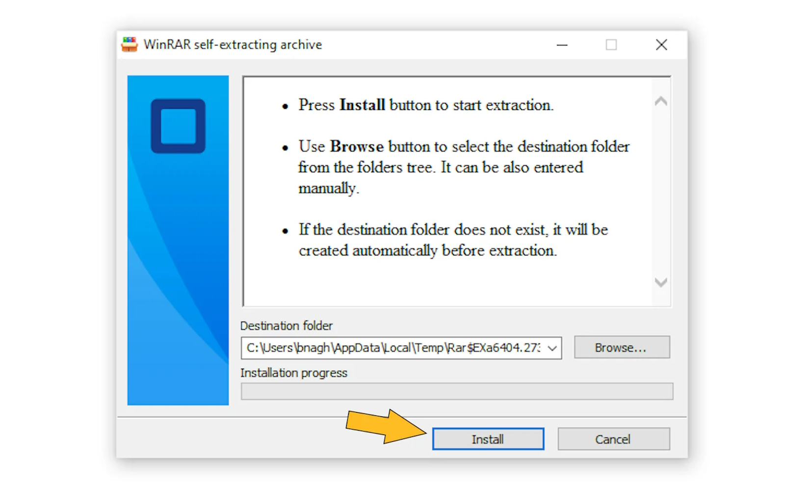

1. Conectați-vă la platforma Microsoft de pe linkul de mai sus
2. Introduceți contul primit
-
Introduceți contul primit
- În „Email / Nume utilizator” introduceți adresa de e-mail din secțiunea „Detalii de conectare” de mai jos.

3. Schimbați parola
La prima conectare, vi se va solicita să setați o parolă nouă. Urmați instrucțiunile de pe ecran și alegeți o parolă sigură pe care DOAR DUMNEAVOASTRĂ o cunoașteți. (Parola inițială de mai jos nu va mai fi valabilă după modificare)
4. Descărcați și instalați Office 365
După ce te autentifici, caută butonul Instalare aplicații în colțul din dreapta sus. Alege Aplicații Microsoft 365 (Word, Excel, PowerPoint etc.) și descarcă fișierul de instalare. Deschide fișierul descărcat și urmează pașii de instalare până la sfârșit.
5. Activați Office pe PC
După instalare, deschideți Word (sau Excel). Dacă vă solicită autentificarea, introduceți DIN NOU același cont (adresă de e-mail + parolă nouă). Aceasta activează licența pe dispozitivul dumneavoastră.
6. Gata!
Office este acum activat și gata de utilizare.